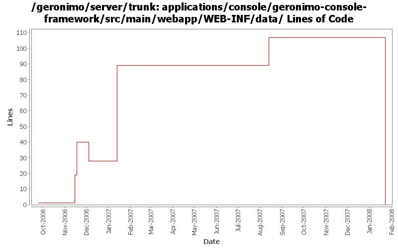

[root]/applications/console/geronimo-console-framework/src/main/webapp/WEB-INF/data
 xml
(0 files, 0 lines)
xml
(0 files, 0 lines)

| Author | Changes | Lines of Code | Lines per Change |
|---|---|---|---|
| Totals | 19 (100.0%) | 152 (100.0%) | 8.0 |
| ccardona | 4 (21.1%) | 98 (64.5%) | 24.5 |
| vamsic007 | 6 (31.6%) | 41 (27.0%) | 6.8 |
| kevan | 2 (10.5%) | 12 (7.9%) | 6.0 |
| pmcmahan | 5 (26.3%) | 1 (0.7%) | 0.2 |
| jdillon | 2 (10.5%) | 0 (0.0%) | 0.0 |
(GERONIMO-3747) Moved applications/* to plugins/*
0 lines of code changed in 2 files:
GERONIMO-3254 Admin Console Wizard to auto generate geronimo-web.xml
and dependencies GERONIMO-3394, GERONIMO-3395, GERONIMO-3396, GERONIMO-3397, GERONIMO-3398
o First commit of "Create Plan" portlet code.
o Thanks to Shiva Kumar H R for this work.
18 lines of code changed in 2 files:
GERONIMO-2689 : New View for JNDI name in all the contexts
GERONIMO-2690 : New view for all the classloaders and classes loaded in it
GERONIMO-2691 : New view for the hierarchical modules and linked dependencies
Thanks Rakesh!
80 lines of code changed in 2 files:
GERONIMO-1601 Remove the "Old Keystore" portlet
o Merging rev 482109 from trunk
o Removed "Old Keystore" related entries from console portlet definitions
o Removed java and jsp files related to "Old Keystore"
o Removed "ssl-keystore-1" entries from webconsole configs
6 lines of code changed in 2 files:
GERONIMO-2537 Update more src file headers
12 lines of code changed in 2 files:
GERONIMO-2413 Add a Certification Authority (CA) portlet to Geronimo console
17 lines of code changed in 2 files:
GERONIMO-1823 Add Embedded LDAP Server Viewer Portlet
18 lines of code changed in 2 files:
fix a typo in the description for the JMX explorer portlet
1 lines of code changed in 1 file:
GERONIMO-2333 JMX Portlet
0 lines of code changed in 4 files: